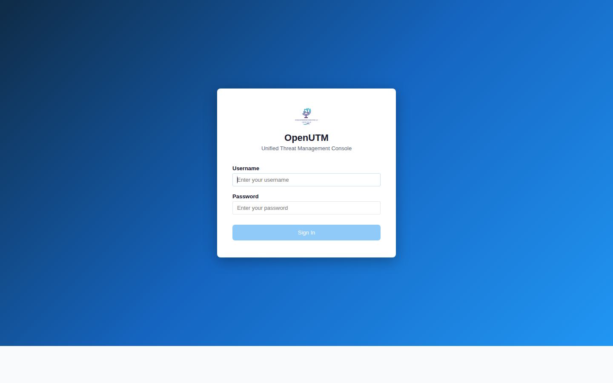

A firewall that doesn't just block threats — it knows why every rule exists, can explain its own configuration to your newest team member, and turns your security posture from tribal knowledge into permanent institutional knowledge.

OpenUTM management console — unified threat management from a single interface.
Every firewall that's been running for more than a year has rules that nobody remembers the context for. The ticket was closed. The documentation was a sticky note. Your best security person is now managing the integration for your latest acquisition and doesn't have time to answer questions from the junior analyst. And so the rule sits — doing something that may or may not still matter — because the cost of deleting it and being wrong is higher than the cost of leaving it and hoping.
Now multiply that by 2,000 rules. Your senior people have bigger responsibilities now. Your team is growing. The new hires need to get productive fast. But the firewall is a black box that only explains itself to people who already know it.
OpenUTM's built-in AI understands your rule set, your network topology, and your traffic patterns. Ask "why is port 8443 open to the accounting VLAN?" and get a human-readable answer with context — not a rule number. Ask "what would break if I deleted rules 320 through 340?" and get an impact analysis before you touch anything.
When a new analyst joins — or an intern starts their rotation — the firewall teaches them. They explore the rule set by asking questions. They understand the security posture by querying it. They ramp up in days instead of months because the institutional knowledge is in the system, available to everyone on the team.
OpenUTM tracks which rules are actually being used and which ones haven't matched traffic in months. It surfaces candidates for cleanup — with confidence scores and impact analysis — so you can prune your rule set without fear.
OpenUTM's AI analyzes your traffic patterns, your rule coverage, and your threat exposure — alongside your firewall, without sending your data anywhere. It understands your specific environment because it runs where you run, not in a vendor cloud looking at aggregated statistics from 10,000 strangers.
No subscription trap. No phone-home telemetry you can't control. Not your vendor. Not a specialist. YOU — in YOUR language. OpenUTM answers to the person running it. You install it, you own it, and it keeps working when you have other things to worry about.
The same OpenUTM image runs on a small office box, a datacenter server, a cloud VM, or a virtual appliance. One set of skills, one set of policies, one management interface — whether you're protecting a branch office or a multi-site enterprise.
All the standard security capabilities, plus the intelligence layer that no other UTM ships with.
No zones. No "inside is trusted, outside isn't." Every connection is inspected on its own merits — where it came from, where it's going, what it's carrying, and whether the policy you set allows it. Think of it like a building where every single door has its own lock and its own guest list, instead of one perimeter fence with an open campus inside. A compromised device on one floor can't wander to another floor just because it's "inside the network." Rules can be as fine-grained as a single connection between two specific machines, or as broad as a company-wide policy — and everything in between.
Tell the AI what you want in plain language — "block all outbound traffic from the finance servers except to our payment processor" — and it builds the rule, explains what it did, and asks you to confirm before applying it. No syntax to memorize, no vendor-specific command language. You describe intent, the system translates it into policy. It's the difference between telling a contractor "I need a wall here" and having to hand them a blueprint in a language you don't speak.
When one firewall in a pair goes down, the other picks up every active connection — video calls, database transactions, real-time trading feeds — without dropping a single packet. At multi-100 gigabit speeds. Most firewalls can fail over. OpenUTM can fail over while your CFO is on a video call with investors and they never notice. That's the difference between "we have redundancy" and "your business didn't blink."
Connect offices, remote workers, and cloud VPCs through encrypted tunnels. Certificate management is integrated — certificates rotate on schedule, not when someone remembers. But what happens when a VPN endpoint goes down? With most firewalls, someone drives to the site, racks a new device, reconfigures the tunnel, and tells 50 remote workers to update their settings. With OpenUTM integrated with NIVMIA, you ask it to reroute traffic and stand up a replacement tunnel — and it does, using the network paths NIVMIA already knows about. Your remote workers never change a setting. The tunnel moves, the connections follow, and the office that lost its VPN box is back online before the replacement hardware arrives.
Watches for attack patterns in your traffic. Blocks known threats automatically. Logs unknown-but-suspicious activity for AI analysis. Updates signatures from your own curated repository — not a vendor's cloud.
DNS-level threat blocking, content categorization, and address management — built in, not bolted on. Your DNS is authoritative for your internal zones, so internal names resolve even when the internet is down. But OpenUTM doesn't just run its own DNS, DHCP, and web filtering — it integrates with, monitors, and helps you manage the ones you already have. Already running a DNS server? OpenUTM watches it, understands it, and with its AI, tells you when something's not right — a misconfiguration, an unexpected change, a query pattern that doesn't belong.
A local AI engine that understands YOUR rules, YOUR topology, and YOUR traffic. Runs entirely on the appliance. Never sends data out. Explains decisions in human language. This is not "AI-powered marketing" — it is a domain-aware assistant that has read every rule you have and can answer questions about them. And it doesn't have to answer in technical jargon. Ask from the CFO's chair and it explains in financial terms — revenue at risk, cost of downtime. Ask from sales and it tells you which customer-facing systems are affected and what opportunities are stalled. Ask from the front desk and it says, in plain simple English, "that system isn't available right now, it should be back up in about 30 minutes." Same AI, same knowledge, different audience — because the person asking the question shouldn't need a networking degree to understand the answer.
Multiple internet connections with intelligent routing. Send your video traffic over the low-latency link and your backups over the cheap one. If any link goes down, traffic reroutes automatically — no support ticket, no manual switchover, no one even notices.
Every other firewall vendor sells you a box. As your team grows, as responsibilities shift, as new people come aboard — the configuration becomes an artifact that only a few people truly understand. OpenUTM is a box that is the documentation. The configuration, the intent, the history, the reasoning — all queryable, all permanent, all institutional. And if you don't have that knowledge base today, one install and it starts building it for you.
Link OpenUTM with IVMIA — our compute and virtualization manager — and the two share information over DEC-LLC's proprietary secure channels. IVMIA knows every host, every VM, every container workload on your infrastructure. OpenUTM uses that knowledge to auto-populate its firewall objects — no manual entry, no stale address lists, no "we forgot to update the firewall when we added that server."
Now the system doesn't just block threats — it understands what it's protecting. An intrusion detection event comes in. OpenUTM correlates it against what IVMIA knows about your environment and tells you: "This is a current threat targeting the version of accounting software running on your finance-app-02 VM. You need to block this type of traffic to these three systems. Shall I do it for you?"
That's not a feature list. That's your infrastructure thinking for itself — getting smarter every day, across every product, because the knowledge compounds.
This matters more than any feature on any spec sheet. Because the firewall your whole team understands is the firewall your whole team can trust. And the firewall only one person understands is the one that's going to fail you on the worst possible day.
Attackers are already using AI to generate phishing, craft exploits, and probe networks. The next generation will be fully autonomous agents that learn your defenses and adapt in real time. But OpenUTM operates in the same real time. It can reroute your traffic, create a secure zone where one didn't exist before, and isolate a threat before it becomes a threat — by seeing its patterns as they emerge.
Even better: integrate OpenUTM with VaultSync — our backup and data protection platform — and the response becomes automatic. You've already told both systems: "this is a P0 critical application, no downtime allowed." So when OpenUTM detects strange behavior on that system, it knows what to do. It tells VaultSync "stop copying from that machine, I'm isolating it." VaultSync already has a clean copy — it's been keeping golden, pre-scanned backups in the SDNS secured vault. It spins the fresh instance up in the new secure zone OpenUTM just created for it — and layers in the pre-scanned deltas in real time, so the restored application is as close to current as it was before the compromise, and still safe. OpenUTM enables the replacement system's network rules automatically. The compromised machine is isolated, the clean replacement is live, your customers don't lose critical time-sensitive data, and you don't lose customers. All because you set the priority once, and the systems honored it.
This isn't just high availability. This is active resilience — your infrastructure defending itself, healing itself, and keeping itself running while you decide what to do next.
Right now, every encrypted connection you have — every VPN tunnel, every certificate, every secure login — is protected by a math problem that takes a normal computer millions of years to solve. A quantum computer solves it over lunch. The day that happens isn't science fiction anymore — governments are already stockpiling encrypted traffic today, waiting for the machines that can read it tomorrow.
DEC-LLC's answer isn't one thing. It's several, layered:
NIS2, SOC 2, HIPAA, PCI-DSS, FINRA, the next wave of state-level data laws — regulators increasingly demand provable security posture, not just policies on paper. And "provable" doesn't mean a binder full of screenshots your team assembled the week before the audit. It means a living, continuous, tamper-evident record that says "here is what we did, here is why, and here is the proof it was enforced."
Think about how most companies prepare for an audit today. It's a fire drill. Someone pulls firewall exports into spreadsheets. Someone else digs through change-management tickets trying to match rules to approvals. A third person writes a narrative explaining why the configuration looks the way it does. It takes weeks. It's incomplete. And the auditor knows it, because they've seen the same scramble at every company they visit.
OpenUTM doesn't just accept random rules a firewall engineer puts in — its AI assistant reasons them out by studying actual traffic patterns. When integrated with NIVMIA, it knows the rules on your edge devices, your other firewalls, your routers, your access control lists — even if they're not OpenUTM firewalls. It self-documents everything. It doesn't just ask the engineer if a rule is a good idea — it tells them why it might be a bad one. It learns why rules exist and which systems depend on them.
So when the auditor arrives and says "prove it," OpenUTM answers: "This is the reason we do it this way. This is why it's safe. And here is the document that proves it." Not a binder assembled last Tuesday — a living document that's been writing itself every day since the system was installed. The auditor gets a verifiable, time-stamped, continuously-maintained record instead of a human reconstruction. Your team gets their month back. And your compliance posture stops being something you perform once a year and becomes something the infrastructure maintains for you, continuously, in the background.
See OpenUTM in real situations:
Scenario: Inheriting Unfamiliar Firewalls → vs Palo Alto, Fortinet, Sophos →OpenUTM is a firewall that explains itself, teaches new hires, remembers why every rule exists, and keeps that knowledge permanent. That's the difference between a security tool and security infrastructure.
View Pricing Talk to Us